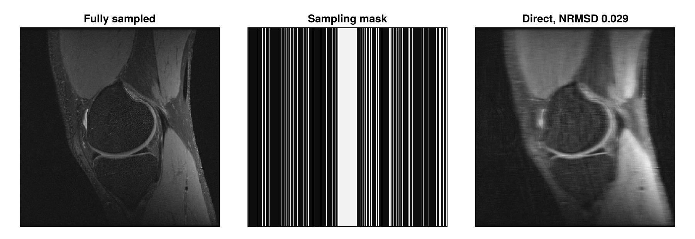
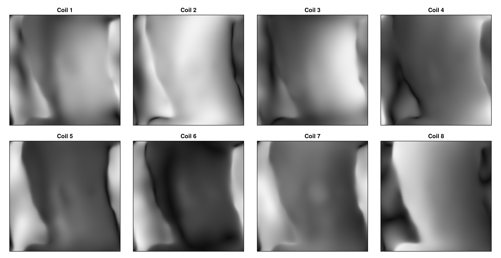
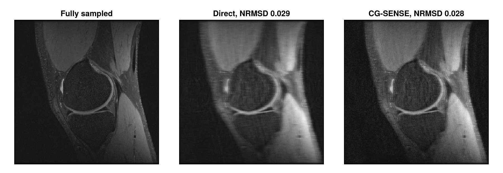
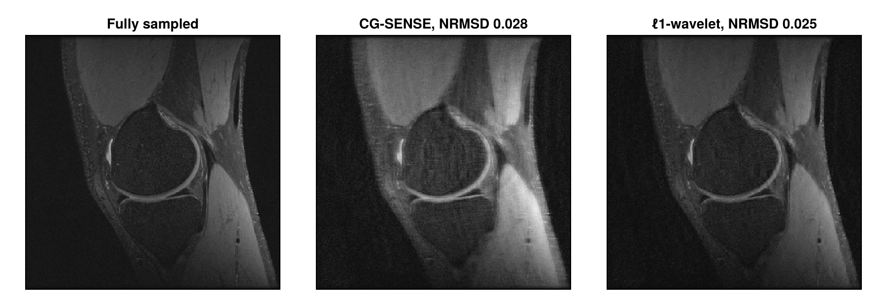
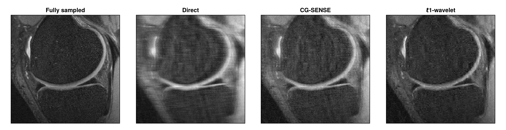

Multi-Coil Reconstruction
Each receive coil is most sensitive to the tissue close to it, so the coils see the object with different weightings. These differences carry spatial information, which parallel imaging uses to reconstruct images from undersampled data. This tutorial undersamples the knee data from Direct Reconstruction, estimates the coil sensitivities and reconstructs a single image from the data of all eight coils with the reconstruction type "multiCoil". Finally, it adds a regularization that combines parallel imaging with compressed sensing.
Besides MRIReco, the tutorial needs MRIFiles to read the data, MRISampling to undersample it, MRICoilSensitivities to estimate the coil sensitivities and CairoMakie for the plots. We use the same plotting function as in Direct Reconstruction.
using MRIReco, MRIFiles, MRISampling, MRICoilSensitivities, CairoMakie
function showimages(images, titles; columns = length(images))
fig = Figure(size = (300 * columns, 310 * cld(length(images), columns)))
for (i, (image, title)) in enumerate(zip(images, titles))
ax = Axis(fig[fldmod1(i, columns)...], title = title,
aspect = DataAspect(), yreversed = true)
heatmap!(ax, image', colormap = :grays)
hidedecorations!(ax)
end
return fig
endLoading the Data
The knee data is fully sampled. Its direct reconstruction, with the coil images combined by the root sum of squares, serves as the reference:
datadir = joinpath(pkgdir(MRIReco), "docs", "src", "examples", "data")
filename = joinpath(datadir, "knee_3dFSE_slice170.h5")
acqData = AcquisitionData(ISMRMRDFile(filename))
params = Dict{Symbol, Any}()
params[:reco] = "direct"
params[:reconSize] = (320, 320)
rootSumOfSquares(images) = sqrt.(sum(abs2, images, dims = 5))[:, :, 1, 1, 1, 1]
referenceImage = rootSumOfSquares(reconstruction(acqData, params))Undersampling
We keep a quarter of the profiles. sample_kspace chooses them by Poisson-disk sampling and, with calsize = 30, always includes the 30 profiles in the center of k-space. These profiles form a fully sampled calibration region, from which we estimate the coil sensitivities below:
acqDataSub = sample_kspace(acqData, 4.0, "poisson", calsize = 30)
samplingMask = zeros(320, 320)
samplingMask[acqDataSub.subsampleIndices[1]] .= 1The direct reconstruction of the undersampled data is blurred and shows stripes along the horizontal direction, in which profiles are missing. We measure the deviation from the reference with nrmsd, the normalized root mean squared deviation:
directImage = rootSumOfSquares(reconstruction(acqDataSub, params))
deviation(image) = round(nrmsd(referenceImage, image), sigdigits = 2)
showimages([referenceImage, samplingMask, directImage],
["Fully sampled", "Sampling mask",
"Direct, NRMSD $(deviation(directImage))"])
Coil Sensitivities
The reconstruction type "multiCoil" describes the data $\mathbf{b}_c$ of coil $c$ by
\[\mathbf{b}_c = \mathbf{F}\mathbf{S}_c\mathbf{x},\]
where $\mathbf{S}_c$ multiplies the image $\mathbf{x}$ by the sensitivity of the coil, and $\mathbf{F}$ applies the Fourier transform and keeps the measured samples, like the encoding operator in Iterative Reconstruction. Image reconstruction with this model is known as SENSE. The sensitivities can be estimated from the data itself. espirit uses the calibration region for this; its second and third arguments are the kernel size and the size of the calibration region. It can also set the sensitivities to zero in voxels without signal. In this slice, the default threshold does this only for some patches of the background, so we turn it off with eigThresh_2 = 0:
sensitivities = espirit(acqDataSub, (6, 6), 30, eigThresh_2 = 0)
size(sensitivities)(320, 320, 1, 8)The dimensions are x, y, z and coils. Inside the knee, the sensitivities vary smoothly, and the coils are most sensitive in different regions. Outside the knee, where there is no signal, they are not meaningful:
showimages([abs.(sensitivities[:, :, 1, c]) for c in 1:8],
["Coil $c" for c in 1:8], columns = 4)
SENSE Reconstruction
From the data of all coils, "multiCoil" reconstructs a single image by solving
\[\underset{\mathbf{x}}{\operatorname{argmin}} \; \frac{1}{2}\sum_{c} \lVert \mathbf{F}\mathbf{S}_c\mathbf{x} - \mathbf{b}_c \rVert_2^2 + \mathrm{R}(\mathbf{x}).\]
Solving this problem with the conjugate gradient method is known as CG-SENSE. We pass the sensitivities as params[:senseMaps] and, as in Iterative Reconstruction, use CGNR with a small $\ell_2$ regularization. With MeasurementBasedNormalization, λ is scaled by the mean magnitude of the measured data:
params = Dict{Symbol, Any}()
params[:reco] = "multiCoil"
params[:reconSize] = (320, 320)
params[:senseMaps] = sensitivities
params[:solver] = CGNR
params[:reg] = L2Regularization(1e-3)
params[:normalizeReg] = MeasurementBasedNormalization()
params[:iterations] = 10
imageSENSE = abs.(reconstruction(acqDataSub, params)[:, :, 1, 1, 1, 1])
showimages([referenceImage, directImage, imageSENSE],
["Fully sampled", "Direct, NRMSD $(deviation(directImage))",
"CG-SENSE, NRMSD $(deviation(imageSENSE))"])
The result is a single image instead of eight coil images. It is sharper than the direct reconstruction, but at this reduction factor, the sensitivities do not suffice to remove all stripes.
Compressed Sensing
MR images can be approximated well by a few large coefficients of a wavelet transform $\mathbf{\Phi}$. Compressed sensing exploits this. Because most of the profiles are chosen at random, the undersampling artifacts are spread like noise along the horizontal direction instead of forming shifted copies of the image. An $\ell_1$ regularization of the wavelet coefficients, $\mathrm{R}(\mathbf{x}) = \lambda \lVert \mathbf{\Phi}\mathbf{x} \rVert_1$, favors images with few large coefficients and thereby suppresses these artifacts. With params[:sparseTrafo] = "Wavelet", the $\ell_1$ regularization applies to the wavelet coefficients. As in the knee example of the MRIReco.jl paper, we use ADMM with λ = 0.2 and 30 iterations:
params[:solver] = ADMM
params[:reg] = L1Regularization(0.2)
params[:sparseTrafo] = "Wavelet"
params[:iterations] = 30
imageWavelet = abs.(reconstruction(acqDataSub, params)[:, :, 1, 1, 1, 1])
showimages([referenceImage, imageSENSE, imageWavelet],
["Fully sampled", "CG-SENSE, NRMSD $(deviation(imageSENSE))",
"ℓ1-wavelet, NRMSD $(deviation(imageWavelet))"])
The wavelet regularization reduces the remaining stripes. The differences are easier to see in a detail of the joint:
detail = (100:260, 80:240)
images = [referenceImage, directImage, imageSENSE, imageWavelet]
showimages([image[detail...] for image in images],
["Fully sampled", "Direct", "CG-SENSE", "ℓ1-wavelet"])
Next Steps
- Iterative Reconstruction shows how the weight λ changes the result.
- The RegularizedLeastSquares.jl documentation describes the available solvers and regularization terms.
- The API reference describes
reconstruction,espiritandsample_kspace.
This page was generated using Literate.jl.